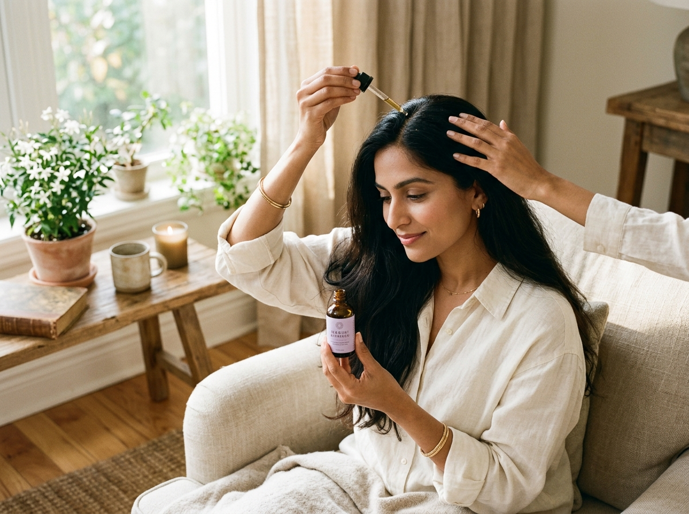

Rooted in Devotion to the Crown
Nachiyar Herbals was born from a refusal to accept chemical-laden compromises. We return to sacred South Indian apothecary traditions to create royal personal care for the modern world.

The Wisdom of Ancient Queens
In classical Tamil poetry and Ayurvedic texts, a woman's hair was revered as an extension of her vitality, spiritual dignity, and sovereignty. Formulas were not made overnight in plastic factories—they were slow-cooked in copper vessels, blessed, and steeped through full lunar cycles.
We preserve this craftsmanship. Every batch of our signature **Lavender Herbal Hair Oil** undergoes 21 days of solar steeping with 18 sacred botanicals.

Handpicked Fresh Hibiscus Blooms
Unlike commercial brands that use powdered synthetic dyes and chemical fragrances, our **Hibiscus Flower Shampoo** uses fresh flowers harvested at dawn in rural Tamil Nadu gardens.
The rich mucilage naturally seals hair cuticles, balances the scalp's pH at an ideal 5.5, and imparts unmatched silkiness without a single drop of silicones.